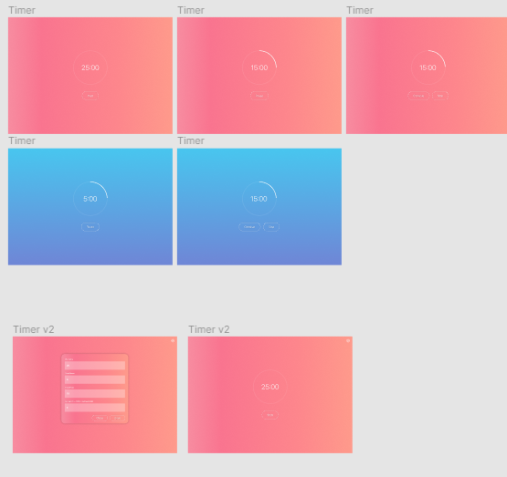

Коротко о проекте
Метод «Помодора» — техника управления временем, предполагает разбиение задач на 25-минутные периоды, называемые «помидоры», сопровождаемые короткими перерывами 2-5 минут.Данный онлайн таймер имеет несколько настроек, можно устанавливать рабочее время, время отдыхa.
Цель: Научиться работать в JS ,реализовывать TImer, использовать библиотеки JQUERY
Технологии: - GULP, PUG, SASS;
- JAVASCRIPT;
Средствами Javascript были реализованы: Timer
Open page